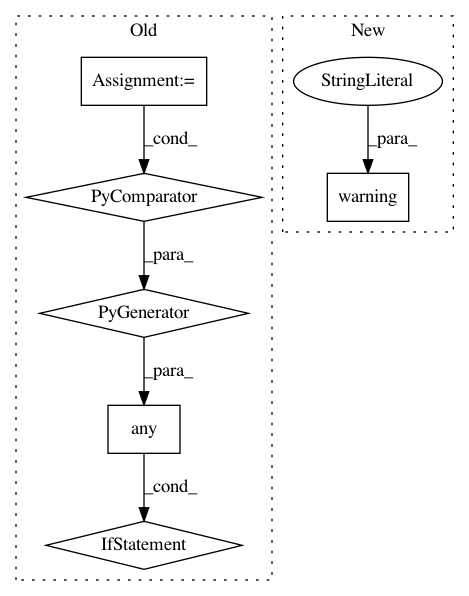

e0468f8b8e8667f05888a1ed218440d3ee2b9d31,homeassistant/__init__.py,HomeAssistant,track_time_change,#HomeAssistant#Any#Any#Any#Any#Any#Any#Any#Any#,158
Before Change
// We do not have to wrap the function with time pattern matching logic
// if no pattern given
if any((val is not None for val in
(year, month, day, hour, minute, second))):
pmp = _process_match_param
year, month, day = pmp(year), pmp(month), pmp(day)
hour, minute, second = pmp(hour), pmp(minute), pmp(second)
@ft.wraps(action)
def time_listener(event):
Listens for matching time_changed events.
now = event.data[ATTR_NOW]
if not utc:
now = date_util.as_local(now)
mat = _matcher
if mat(now.year, year) and \
mat(now.month, month) and \
mat(now.day, day) and \
mat(now.hour, hour) and \
mat(now.minute, minute) and \
mat(now.second, second):
action(now)
else:
@ft.wraps(action)
def time_listener(event):
Fires every time event that comes in.
action(event.data[ATTR_NOW])
self.bus.listen(EVENT_TIME_CHANGED, time_listener)
return time_listener
def stop(self):
After Change
hour=None, minute=None, second=None, utc=False):
Deprecated method to track time change.
// pylint: disable=too-many-arguments
_LOGGER.warning(
"hass.track_time_change is deprecated. "
"Please use homeassistant.helpers.event.track_time_change")
import homeassistant.helpers.event as helper
helper.track_time_change(self, action, year, month, day, hour,
minute, second)
In pattern: SUPERPATTERN
Frequency: 3
Non-data size: 6
Instances
Project Name: home-assistant/home-assistant
Commit Name: e0468f8b8e8667f05888a1ed218440d3ee2b9d31
Time: 2015-07-26
Author: paulus@paulusschoutsen.nl
File Name: homeassistant/__init__.py
Class Name: HomeAssistant
Method Name: track_time_change
Project Name: allenai/allennlp
Commit Name: 40ec35876d38c4797ad3ee9bf911b019faa5a61d
Time: 2017-08-25
Author: mattg@allenai.org
File Name: allennlp/nn/initializers.py
Class Name: InitializerApplicator
Method Name: __call__
Project Name: home-assistant/home-assistant
Commit Name: 6c0f4c35f6e6ea8c2993c6582f2f983bc9c4c5ad
Time: 2017-09-23
Author: tommatheussen5@hotmail.com
File Name: homeassistant/components/sensor/systemmonitor.py
Class Name: SystemMonitorSensor
Method Name: update